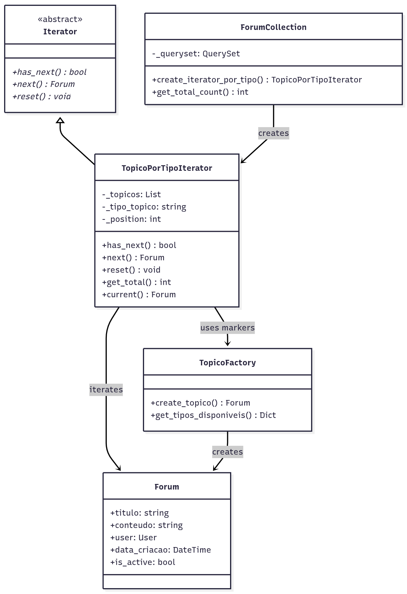

3.2. Iterator - Fórum de Tópicos
1. Introdução
O padrão Iterator é um dos padrões de projeto comportamentais propostos pela Gang of Four (GoF). Seu principal objetivo é fornecer uma maneira de acessar sequencialmente os elementos de uma coleção sem expor sua representação subjacente, promovendo baixo acoplamento e maior flexibilidade na navegação através de dados.
2. Metodologia
Neste projeto, o padrão Iterator foi implementado com o objetivo de gerenciar a navegação através de diferentes tipos de tópicos no fórum da plataforma Dicas de Estágio. O sistema permite navegar eficientemente pelos cinco tipos distintos de tópicos: Vagas, Dúvidas, Experiências, Dicas e Discussões. A implementação se integra perfeitamente com o padrão Factory Method já existente, utilizando os marcadores criados pelo Factory para filtrar e navegar pelos tópicos.
A aplicação do padrão foi conduzida a partir do estudo teórico do conceito e da análise das necessidades de navegação através de diferentes tipos de conteúdo no fórum. A partir disso, foi elaborada uma estrutura que permite a navegação padronizada e extensível através de tópicos com características específicas para cada tipo.
Após a definição da arquitetura, a implementação foi realizada em três etapas:
- Definição da interface Iterator e implementação concreta em backend/Forum/iterators/forum_iterators.py;
- Integração com o modelo existente Forum e Factory Method em backend/Forum/models.py;
- Criação de testes automatizados para validação das regras e consistência do padrão em backend/Forum/iterators/test_iterators.py.
3. Participantes
Os participantes da implementação deste Padrão de Projeto estão descritos na tabela abaixo:
Tabela 1: Participantes da implementação do Iterator
| Nome do Integrante | Artefato | Link Comprobatório |
|---|---|---|
| Daniel Ferreira Nunes | Iterator | PR #6 |
| Paulo Cerqueira | Iterator | PR #6 |
| Eduardo Ferreira de Aquino | Iterator | PR #6 |
4. Aplicação do Iterator
4.1. Modelagem UML
Figura 1: Diagrama de Classes do Iterator para Tópicos do Fórum

Autores: Paulo Cerqueira, Daniel Ferreira Nunes, Eduardo Ferreira de Aquino
A estrutura implementada demonstra a relação entre as classes, destacando a dependência da implementação concreta (TopicoPorTipoIterator) em relação à interface abstrata Iterator, bem como a associação entre o iterator e a coleção (ForumCollection) e sua integração com o Factory Method existente.
4.2. Implementação
A estrutura implementada pode ser resumida da seguinte forma:
python class Iterator(ABC): @abstractmethod def has_next(self) -> bool: pass
@abstractmethod
def next(self) -> Any:
pass
@abstractmethod
def reset(self) -> None:
pass
A interface Iterator define os métodos essenciais para navegação (has_next, next, reset), que serão obrigatoriamente implementados nas classes concretas. O iterator concreto é responsável por navegar através de tópicos de um tipo específico utilizando os marcadores criados pelo Factory Method:
python class TopicoPorTipoIterator(Iterator): def init(self, topicos: QuerySet, tipo_topico: str = None): self._topicos = list(topicos) self._tipo_topico = tipo_topico self._position = 0
if tipo_topico:
self._filtrar_por_tipo()
def _filtrar_por_tipo(self):
marcadores = {
'vaga': '[VAGA',
'duvida': '[DÚVIDA',
'experiencia': '[EXPERIÊNCIA',
'dica': '[DICA',
'discussao': '[DISCUSSÃO'
}
# Filtrar tópicos pelos marcadores do Factory Method
...
python class ForumCollection: def init(self, queryset: QuerySet = None): self._queryset = queryset if queryset is not None else Forum.objects.all()
def create_iterator_por_tipo(self, tipo_topico: str) -> TopicoPorTipoIterator:
return TopicoPorTipoIterator(self._queryset, tipo_topico)
Através dessa estrutura, o código cliente não precisa conhecer diretamente a estrutura interna da coleção de tópicos. Ele apenas interage com o iterator:
python collection = ForumCollection() iterator = collection.create_iterator_por_tipo('vaga')
while iterator.has_next(): topico = iterator.next() # Processar apenas tópicos de vaga
Dessa forma, a navegação é encapsulada dentro do iterator, permitindo diferentes estratégias de travessia sem alterar o código cliente.
4.3. Integração com o Sistema
A integração do padrão Iterator com o sistema existente foi realizada de forma a complementar perfeitamente o padrão Factory Method já implementado. O Iterator utiliza os marcadores criados pelo Factory Method ([VAGA], [DÚVIDA], etc.) para filtrar e navegar através dos tópicos de forma eficiente.
O sistema utiliza a classe ForumCollection como aggregate que encapsula a criação de diferentes tipos de iterators. Isso garante que a navegação através dos dados seja eficiente e que novas estratégias de iteração possam ser adicionadas facilmente, respeitando o princípio Aberto/Fechado (OCP) do SOLID.
4.4. Códigos na Íntegra
A seguir, estão apresentados os códigos que implementam as classes relacionadas ao Iterator para navegação através de tópicos do fórum.
Forum/iterators/forum_iterators.py
Clique aqui para ver o código inteiro
python from abc import ABC, abstractmethod from typing import Any, Optional from django.db.models import QuerySet from ..models import Forum class Iterator(ABC): @abstractmethod def has_next(self) -> bool: pass @abstractmethod def next(self) -> Any: pass @abstractmethod def reset(self) -> None: pass class TopicoPorTipoIterator(Iterator): def __init__(self, topicos: QuerySet, tipo_topico: str = None): self._topicos = list(topicos) self._tipo_topico = tipo_topico self._position = 0 if tipo_topico: self._filtrar_por_tipo() def _filtrar_por_tipo(self): marcadores = { 'vaga': '[VAGA', 'duvida': '[DÚVIDA', 'experiencia': '[EXPERIÊNCIA', 'dica': '[DICA', 'discussao': '[DISCUSSÃO' } marcador = marcadores.get(self._tipo_topico.lower()) if marcador: self._topicos = [ topico for topico in self._topicos if marcador in topico.titulo ] def has_next(self) -> bool: return self._position < len(self._topicos) def next(self) -> Forum: if not self.has_next(): raise StopIteration("Não há mais tópicos") topico = self._topicos[self._position] self._position += 1 return topico def reset(self) -> None: self._position = 0 def get_total(self) -> int: return len(self._topicos) def current(self) -> Optional[Forum]: if 0 <= self._position - 1 < len(self._topicos): return self._topicos[self._position - 1] return None class ForumCollection: def __init__(self, queryset: QuerySet = None): self._queryset = queryset if queryset is not None else Forum.objects.all() def create_iterator_por_tipo(self, tipo_topico: str) -> TopicoPorTipoIterator: return TopicoPorTipoIterator(self._queryset, tipo_topico) def get_total_count(self) -> int: return self._queryset.count() def exemplo_basico(): collection = ForumCollection() iterator_vagas = collection.create_iterator_por_tipo('vaga') print(f"Vagas encontradas: {iterator_vagas.get_total()}") while iterator_vagas.has_next(): vaga = iterator_vagas.next() print(f"• {vaga.titulo}") if __name__ == "__main__": exemplo_basico()5. Testes e Validação
5.1. Passo-a-passo de execução dos testes
Navegar para o diretório do projeto
bash cd backend
Ativar o ambiente virtual (se necessário)
bash source ../.venv/bin/activate
Executar os testes do Iterator
bash python manage.py test Forum.iterators.test_iterators -v 2
Executar comando de demonstração
bash python manage.py shell -c "from Forum.iterators.forum_iterators import exemplo_basico; exemplo_basico()"
Ao executar os testes, o Django cria um banco de dados temporário e verifica se os iterators e navegação funcionam conforme o esperado, garantindo que o padrão Iterator foi corretamente aplicado para a navegação através dos tópicos do fórum.
5.2. Resultados Esperados
Os testes validam os seguintes aspectos:
- Navegação correta através de diferentes tipos de tópicos: Verifica se cada iterator navega corretamente pelos tópicos do tipo especificado
- Filtragem por marcadores: Testa se a integração com Factory Method funciona através dos marcadores nos títulos
- Controle de posição: Confirma se os métodos has_next(), next() e reset() funcionam adequadamente
- Integridade da navegação: Garante que todos os tópicos são visitados sem duplicação ou omissão
- Extensibilidade: Verifica se novos tipos de iterators podem ser adicionados sem quebrar funcionalidades existentes
6. Conclusão
A implementação do padrão Iterator para o sistema de navegação através de tópicos do fórum garantiu uma estrutura organizacional robusta e eficiente para a plataforma Dicas de Estágio. O padrão possibilitou a navegação padronizada através de diferentes tipos de conteúdo, cada um filtrado e acessado de forma eficiente, mantendo a consistência e facilitando futuras expansões.
A aplicação do padrão foi acompanhada de implementação completa em Python/Django, integração perfeita com o padrão Factory Method existente, integração com API REST, testes automatizados abrangentes e documentação detalhada, assegurando sua correta funcionalidade e aderência aos princípios da engenharia de software orientada a objetos.
O sistema resultante oferece uma base sólida para a navegação eficiente através do fórum, permitindo a adição de novas estratégias de iteração de forma organizada e mantendo a performance e consistência na navegação através do conteúdo publicado.
7. Vídeo comprobatório
8. Referências
- Gamma, E., Helm, R., Johnson, R., & Vlissides, J. (1995). Design Patterns: Elements of Reusable Object-Oriented Software. Addison-Wesley.
- Django Documentation — https://docs.djangoproject.com
- Refactoring Guru: Iterator Pattern — https://refactoring.guru/design-patterns/iterator
- Martin, R. C. (2017). Clean Architecture: A Craftsman's Guide to Software Structure and Design. Prentice Hall.